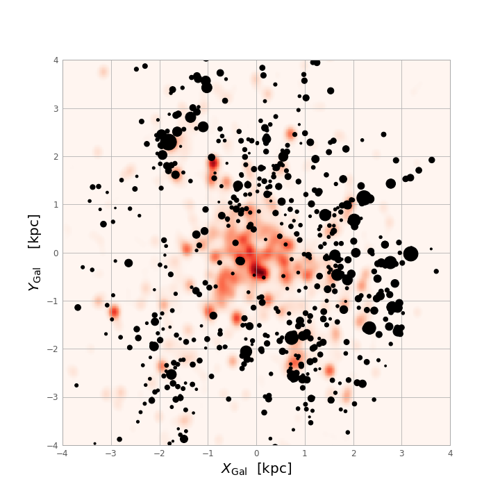

Profile
I am currently a Marie Sklodowska Curie Fellow in the GaiaUB group at the Institute for Space Science at the University of Barcelona (ICCUB), applying data analysis techniques within the realm of Galactic astrophysics. Neither observer nor theorist, something in-between.
Since my diploma thesis at TU Dresden in 2013 I have been working in Galactic astrophysics. Until 2018 I worked as a PhD student and postdoc in the Milky Way and Local Volume Group at the Leibniz-Institut für Astrophysik Potsdam ( AIP) in Germany, where I got a PhD in astrophysics from the University of Potsdam in 2017. At AIP my main focus laid on spectroscopic stellar surveys, and how to combine them with astrometric and asteroseismic data to study the formation history of the Milky Way. Another main achievement during my PhD was the creation of a code, called StarHorse, combining multi-wavelength data to better constrain stellar distances, ages and extinctions.
I am an active member in various large astronomical projects, such as the Apache Point Observatory Galactic Evolution Experiment (APOGEE), the the RAdial Velocity Experiment (RAVE), the the WEAVE Project, and the 4-Meter Multi-Object Survey Telescope (4MOST).
I am curious about Austrian 20th century literature, destructive-constructive progressive music, the philosophy of science, politics, rock climbing, and absurd vinyl records.
Research
Mapping the Milky Way with the StarHorse code
Stellar distances and ages for millions of stars are needed to understand the chemo-dynamical history of Galaxy. The StarHorse code is a flexible python tool that I co-developed during my PhD, and that enables us to determine precise stellar parameters for millions of field stars with good Gaia parallaxes.
The Gaia data, combined with ground- and space-based photometric surceys, also allowed us to study the three-dimensional distribution of stars beyond the parallax horizon, clearly revealing structures like the Galactic bar in stellar density maps ( ESA Press Release").
Queiroz, A. B. A.; Anders, F.; Chiappini, C.; et al. (2020), From the bulge to the outer disc: StarHorse stellar parameters, distances, and extinctions for stars in APOGEE DR16 and other spectroscopic surveys, A&A, 638, A76
Anders, F.; Khalatyan, A.; Chiappini, C.; et al. (2019), Photo-astrometric distances, extinctions, and astrophysical parameters for Gaia DR2 stars brighter than G = 18, A&A, 628, A94
Queiroz, A. B. A.; Anders, F., Santiago, B. X.; et al. (2018), StarHorse: a Bayesian tool for determining stellar masses, ages, distances, and extinctions for field stars, MNRAS, 476, 2, 2556
Galactic archaeology
The main challenge of Galactic archaeology today is to unravel the Milky Way’s assembly and evolution history by determining ages, chemical compositions, and kinematics of millions of stars covering all parts of the Milky Way. Major observing campaigns of the last decade, and the success of the Gaia mission, have assured that this is in principle possible: precise radial velocities as well as basic chemical information for millions of stars have already been obtained by surveys such as RAVE, SEGUE, APOGEE, LAMOST or GALAH. Gaia, on the other hand, allows us to measure parallaxes and transverse kinematics for billions of stars for the first time with unprecedented precision; the second Gaia data release from 2018 provides a new testbench for the next-generation Milky-Way models. The mere existence of these large datasets, however, is not enough to ensure a major knowledge gain about our Galaxy. Many datasets are subject to non-trivial selection effects, systematic uncertainties (especially for ages of field stars), and correlated errors that impede straightforward conclusions and affect simplistic model comparisons (see e.g. this AIP press release"). Here is the first systematic use of combined asteroseismic and spectroscopic data to measure the radial abundance gradient in the Galaxy, together with a comparison to a cosmological Milky-Way simulation:
Minchev, I.; Anders, F., Recio-Blanco, A.; et al. (2018), Estimating stellar birth radii and the time evolution of Milky Way's ISM metallicity gradient, MNRAS, 481, 1, 645
Anders, F., Chiappini, C.; Minchev, I.; et al. (2017), Red giants observed by CoRoT and APOGEE: The evolution of the Milky Way's radial metallicity gradient, A&A, 600, A70
Anders, F., Chiappini, C.; Rodrigues, T. S.; et al. (2017), Galactic archaeology with asteroseismology and spectroscopy: Red giants observed by CoRoT and APOGEE , A&A, 597, A30
Anders, F., Chiappini, C.; Santiago, B. X.; et al. (2014), Chemodynamics of the Milky Way. I. The first year of APOGEE data , A&A, 564, A115
Discovering and characterising open clusters with Gaia
Open clusters are groups of a dozen to several thousands of stars that were born together from the same parent molecular cloud, and remained bound by gravity. Their distances and ages can be estimated more easily than for individual stars, and they can be used to trace the structure of our Galaxy. ESA's Gaia mission provides us with precise measurements of parallaxes and proper motions that can be used to identify compact groups of stars traveling together through the Galaxy. Most of these newly discovered clusters cannot be seen in static images of the sky, but can easily be spotted using the Gaia measurements of distance and velocity (see e.g. this Gaia image of the week).
Anders, F., Cantat-Gaudin, T., Quadrino-Lodoso, I., Gieles, M., Jordi, C., Castro-Ginard, A., Balaguer-Núñez, L. (2020), The star cluster age function in the Galactic disc with Gaia DR2: Fewer old clusters and a low cluster formation efficiency , A&A, subm.
Cantat-Gaudin, T., Anders, F., Castro-Ginard, A., Jordi, C., Romero-Gómez, M. et al. (2020), Painting a portrait of the Galactic disc with its stellar clusters, A&A, 640, A1
Cantat-Gaudin, T., Anders, F. (2020), Clusters and mirages: cataloguing stellar aggregates in the Milky Way , A&A, 633, A99
Castro-Ginard, A., Jordi, C.; Luri, X.; Álvarez Cid-Fuentes, J.; Casamiquela, L.; Anders, F., et al. (2020), Hunting for open clusters in Gaia DR2: 582 new open clusters in the Galactic disc , A&A, 635, A45
Data mining and machine learning
The sample sizes and the number of available stellar chemical abundances have reached dimensions in which it has become difficult to process all the available information in an effective manner. Dimensionality reduction and unsupervised learning techniques can be used to analyse the stellar abundance-space distribution. Here is a t-SNE view of the solar vicinity's stellar abundance space:
Anders, F., Chiappini, C., Santiago, B. X., et al. (2018), Dissecting stellar chemical abundance space with t-SNE , A&A, 628, A94. >A&A, 619, A125